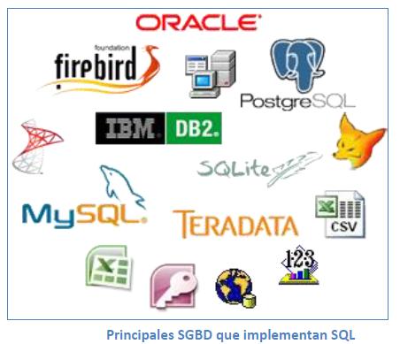
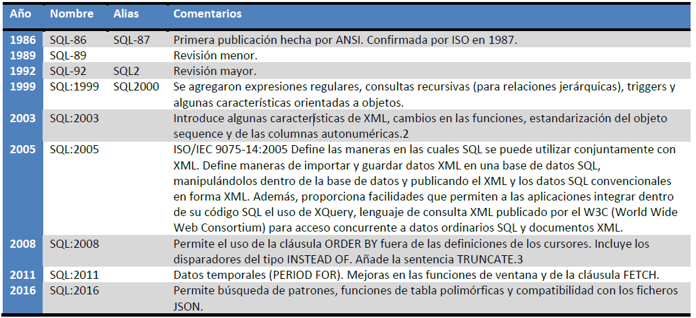

LENGUAJE ESTRUCTUCTURADO DE CONSULTAS (SQL)
El lenguaje de consulta estructurado o SQL (por sus siglas en inglés Structured Query Language) es un lenguaje declarativo de acceso a bases de datos relacionales.
Una de sus características es el manejo del álgebra y el cálculo relacional que permiten efectuar consultas con el fin de recuperar información de interés de bases de datos, así como hacer cambios en ella.
SQL es un lenguaje de acceso a bases de datos que explota la flexibilidad y potencia de los sistemas relacionales y permite así gran variedad de operaciones. Es un lenguaje declarativo de alto nivel y no procedimental que, gracias a su fuerte base teórica y su orientación al manejo de conjuntos de registros (y no a registros individuales) permite una alta productividad en codificación y la orientación a objetos.

SQL también tiene las siguientes características generales:
- Lenguaje de definición o descripción de datos (DDL o LDD): El DDL de SQL proporciona comandos para la definición de esquemas de relación, borrado de relaciones y modificaciones de los esquemas de relación.
- Lenguaje interactivo de manipulación de datos (DML o LMD): El LMD de SQL incluye lenguajes de consultas basado tanto en álgebra relacional como en cálculo relacional de tuplas.
- Integridad: El LDD de SQL incluye comandos para especificar las restricciones de integridad que deben cumplir los datos almacenados en la base de datos.
- Definición de vistas: El LDD incluye comandos para definir las vistas.
- Control de transacciones: SQL tiene comandos para especificar el comienzo y el final de una transacción.
- SQL incorporado y dinámico: Esto quiere decir que se pueden incorporar instrucciones de SQL en lenguajes de programación como: C++, C, Java, PHP, Cobol, Pascal y Fortran.
- Autorización: El LDD incluye comandos para especificar los derechos de acceso a las relaciones y a las vistas.
En 1986, el ANSI adoptó SQL (sustancialmente adoptó el dialecto SQL de IBM) como estándar para los lenguajes relacionales y en 1987 se transformó en estándar ISO. Esta versión del estándar se denomina SQL/86. En los años siguientes, el estándar ha sufrido diversas revisiones que se resumen en la tabla siguiente:

El hecho de tener un estándar definido por un lenguaje para bases de datos relacionales abre potencialmente el camino a la interoperabilidad entre todos los productos que se basan en ese estándar.
Desde el punto de vista práctico, por desgracia las cosas fueron de otro modo. Efectivamente, en general cada productor adopta e implementa en la propia base de datos sólo el corazón del lenguaje SQL (llamado "Entry level"), extendiéndolo de manera individual según la propia visión que cada cual tenga del mundo de las bases de datos. En esta unidad estudiaremos la implementación del lenguaje SQL que hace el SGBD MySQL, que coincide en gran medida con otras implementaciones de otros desarrolladores de software.